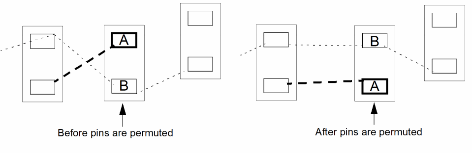

Permuting Pins Manually
You can permute only those pins that were not previously connected to a path, polygon, rectangle, or component pin.
To manually permute pins within a component:
-
From the layout window menu bar, choose Connectivity – Pins – Permute.
Layout XL prompts you to select a pin. -
Click the first pin in the layout canvas.
Layout XL prompts you to select a second pin. -
Click the second pin in the layout canvas.
Layout XL switches the net connections of the pins you selected. If flight lines are displayed, they change to show the new nets assigned to the pins.
The Permute Pins command is modal, meaning that you can continue to select sets of pins to permute without re-choosing the command every time. -
To undo the permutation, choose Edit – Undo from the layout window menu bar.
The pins return to their original net connection in the layout. -
To cancel the command, press
Esc.
To permute the source and drain for an instance with a simple permute rule for two terminals only, you can right-click the instance and choose Permute Pins from the context menu.
Permuting Chained Instance Pins
To permute all the source and drain pins on selected chained instances:
-
Right-click the instance chain and choose Permute Pins from the shortcut menu.
The source and drain pins on all the instances in the selected set are permuted, leaving any existing abutments undisturbed.
Related Topics
Return to top